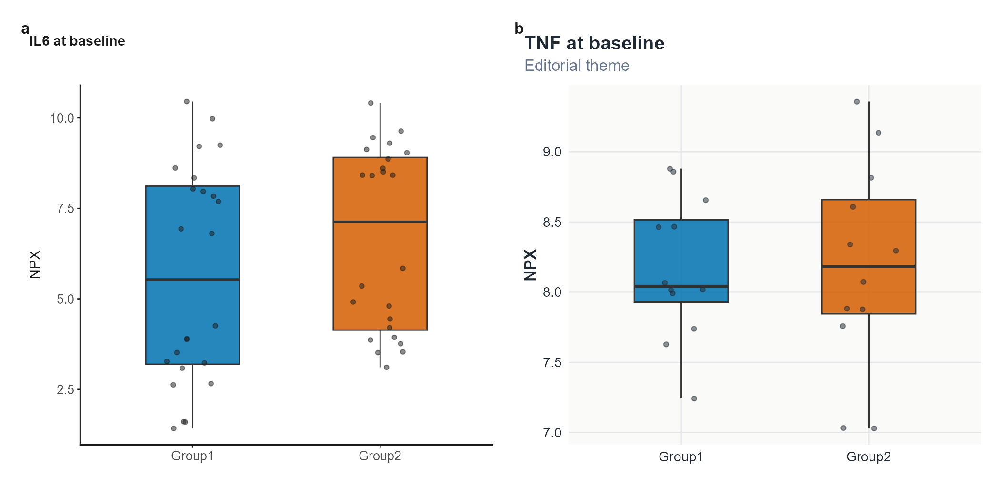
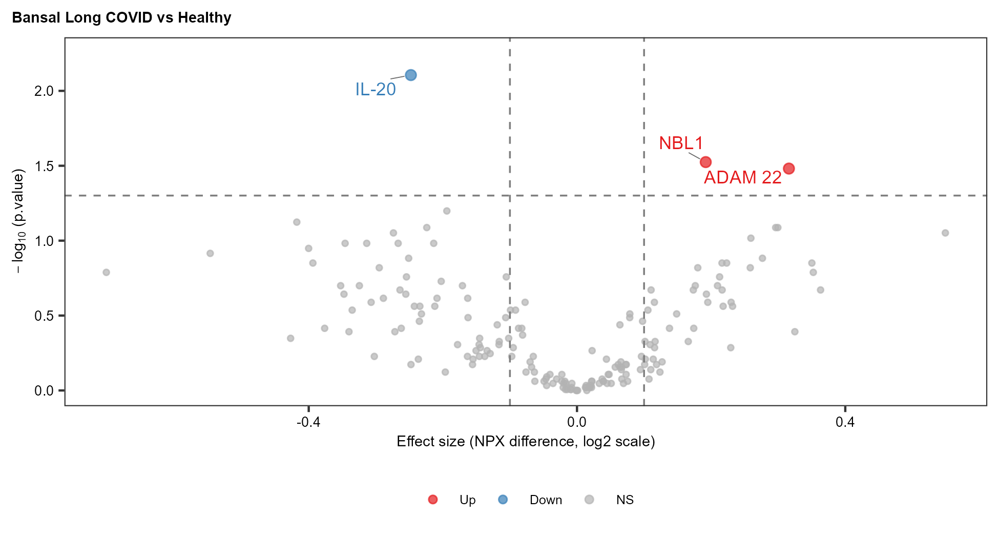
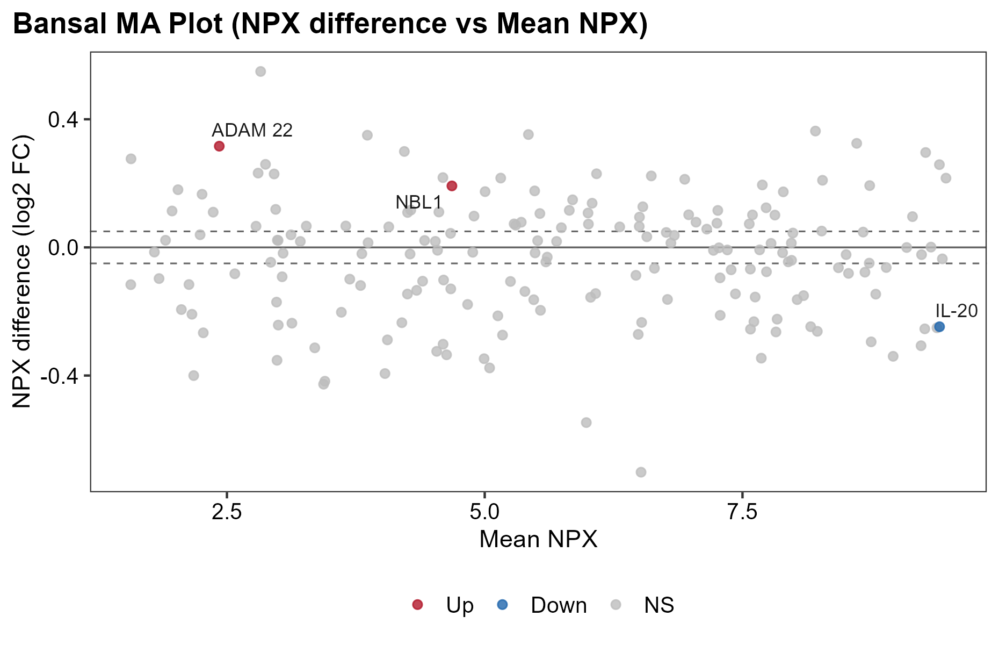
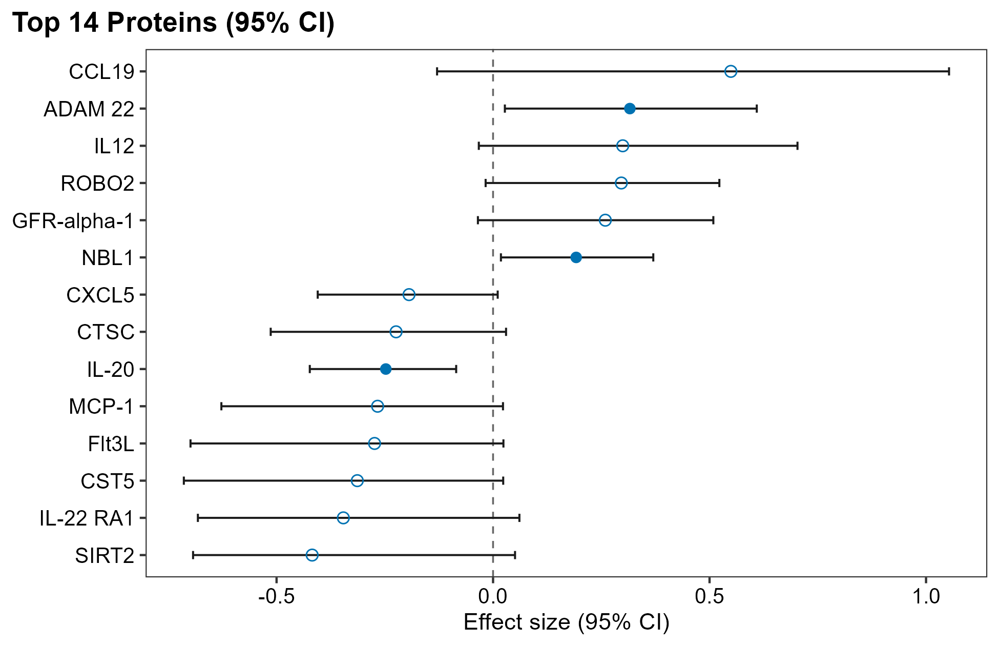
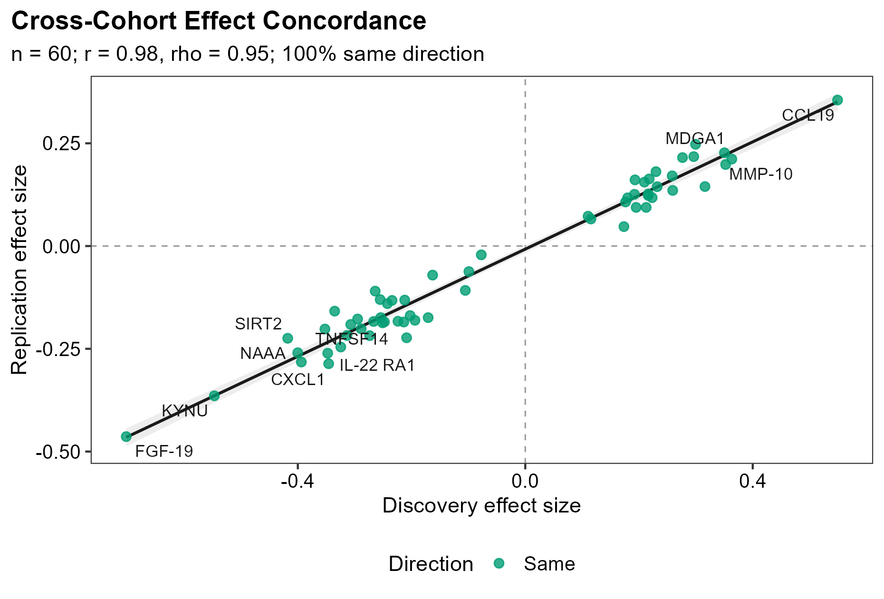
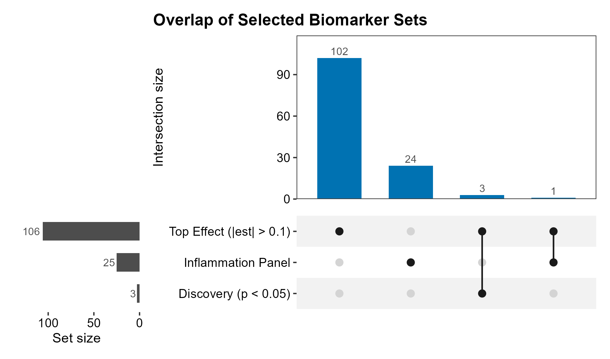
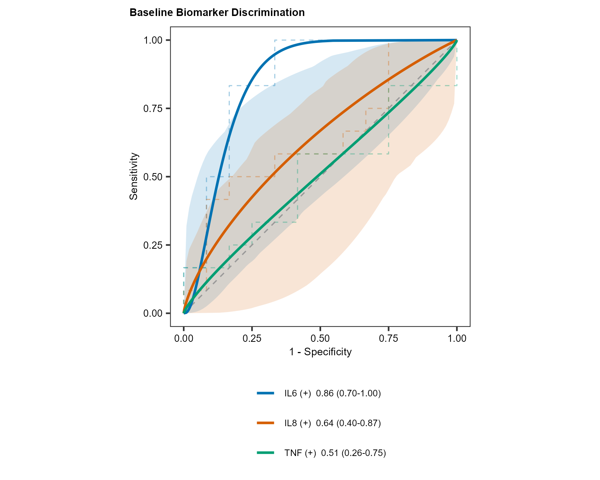

Journal Specifications, Pre-Flight QA, and Publication Figures
OlinkViz Authors
2026-11-17
Source:vignettes/journal_figures.Rmd
journal_figures.RmdA figure is judged at the size, and by the rules, of the journal it
is headed for. OlinkViz keeps those rules in
one registry (journal_spec(),
journal_specs(), journal_spec_add()) and
connects them to olinkviz_options(),
journal_width(), theme_journal(),
olinkviz_combine(), olinkviz_preflight(), and
save_olinkviz().
The journal specification registry
journal_spec() returns the column widths, maximum figure
height, text-size floor and ceiling, minimum stroke weight, panel-tag
style, and raster DPI requirements for a target journal or output
purpose:
journal_spec("nature")
#> <journal spec> nature: Nature (Springer Nature) [journal]
#> widths single 90 | 1.5 120 | double 180 mm (also quoted: 89 / 183 mm)
#> max height 170 mm
#> text 5-7 pt (body 7 pt)
#> lines not stated *
#> panel tags lower-case, 8 pt bold
#> raster dpi halftone >= 300
#> fonts Arial, Helvetica
#> formats PDF, EPS, AI
#> colour RGB
#> provenance publisher page, checked 2026-10
#> https://research-figure-guide.nature.com/figures/building-and-exporting-figure-panels/
#> https://research-figure-guide.nature.com/figures/preparing-figures-our-specifications/
#> * not stated by the guide:
#> line_min_pt: none stated; checks use 0.25 pt
#> notes:
#> Text must be 5-7 pt at final size (guide: 'Minimum text size: 5 pt', 'Maximum
#> text size: 7 pt'); panel labels are 8-pt bold, upright, lower-case; the
#> maximum figure height is 170 mm. Nature's figure guide quotes 89 / 183 mm
#> columns while its author formatting guide quotes 90 / 180 mm: 90 / 180 is
#> used here and 89 / 183 is accepted as an alternative. The 120 mm
#> one-and-a-half column is the Nature Portfolio convention, not a
#> flagship-Nature number. A 7 pt 'minimum' sometimes quoted for Nature is its
#> maximum text size.Fields not stated by the publisher’s author guide are filled from the
publisher’s generic artwork guide or a package default and marked with
* when printed. Browse all registered specifications with
journal_specs():
ids <- c("nature", "natcomms", "science", "cell", "pnas", "plos", "jid",
"allergy", "jaci", "bjd", "default")
width_table <- do.call(rbind, lapply(ids, function(id) {
s <- journal_spec(id)
w <- function(k) if (k %in% names(s$widths_mm)) unname(s$widths_mm[[k]]) else NA_real_
data.frame(
journal = id,
single_mm = w("single"),
onehalf_mm = w("onehalf"),
double_mm = w("double"),
max_h_mm = s$max_height_mm,
min_pt = s$font_min_pt,
max_pt = s$font_max_pt,
tag_case = s$tag_case
)
}))
knitr::kable(width_table, caption = "Selected journal column widths and text limits")| journal | single_mm | onehalf_mm | double_mm | max_h_mm | min_pt | max_pt | tag_case |
|---|---|---|---|---|---|---|---|
| nature | 90 | 120 | 180.0 | 170.0 | 5 | 7 | lower |
| natcomms | 88 | NA | 180.0 | 225.0 | 5 | 8 | lower |
| science | 57 | 121 | 184.0 | 230.0 | 5 | NA | upper |
| cell | 85 | 114 | 174.0 | 200.0 | 6 | 8 | upper |
| pnas | 87 | 114 | 178.0 | 225.0 | 6 | 12 | upper |
| plos | 132 | NA | 190.5 | 222.3 | 8 | 12 | upper |
| jid | 90 | 140 | 190.0 | 240.0 | 6 | NA | upper |
| allergy | 80 | NA | 180.0 | NA | 6 | NA | upper |
| jaci | 90 | 140 | 190.0 | NA | 6 | NA | upper |
| bjd | 85 | NA | 175.0 | NA | 7 | NA | upper |
| default | 90 | NA | 180.0 | 240.0 | 7 | NA | lower |
Look up column widths in millimetres or inches with
journal_width(), and register custom or lab-specific
presets with journal_spec_add():
journal_width("double", "nature")
#> [1] 180
journal_width("2col", "science")
#> [1] 121
journal_spec_add("cell3", widths_mm = c(single = 55, onehalf = 114, double = 174),
base = "cell", overwrite = TRUE)
journal_width("single", "cell3")
#> [1] 55Themes and journal-inspired palettes
theme_journal() reads body size, font family, text
floors, title ceiling, panel-tag size, and minimum stroke weight
directly from the registry. theme_editorial() provides a
warm off-white panel (#FAFAF8) with subtle gridlines for
reports, preprints, and web articles.
p_nat <- ggplot(probc[probc$Timepoint == 1 & probc$Assay == "IL6", ],
aes(x = Project, y = NPX, fill = Project)) +
geom_boxplot(width = 0.5, outlier.shape = NA, alpha = 0.85) +
geom_jitter(width = 0.15, size = 0.9, alpha = 0.5, colour = "#1a1a1a") +
scale_fill_olinkviz("okabe_ito", guide = "none") +
labs(title = "IL6 at baseline", x = NULL, y = "NPX") +
theme_journal("nature")
p_ed <- ggplot(probc[probc$Timepoint == 1 & probc$Assay == "TNF", ],
aes(x = Project, y = NPX, fill = Project)) +
geom_boxplot(width = 0.5, outlier.shape = NA, alpha = 0.85) +
geom_jitter(width = 0.15, size = 0.9, alpha = 0.5, colour = "#1F2933") +
scale_fill_olinkviz("editorial", guide = "none") +
labs(title = "TNF at baseline", subtitle = "Editorial theme", x = NULL, y = "NPX") +
theme_editorial("preprint")
if (requireNamespace("patchwork", quietly = TRUE)) {
olinkviz_combine(p_nat, p_ed, journal = "nature")
} else {
p_nat
}
When you already have an OlinkViz plot from
plot_volcano(), plot_qc(), or
plot_boxplot() and want to enforce a journal’s text limits
without overwriting hidden axes or legend placement, add
theme_journal_text():
plot_volcano(bansal_univariate, pval_col = "p.value", fc_col = "estimate",
fc_threshold = 0.1, max_labels = 8,
title = "Bansal Long COVID vs Healthy") +
theme_journal_text("nature")
All built-in and journal palettes ("okabe_ito",
"nature", "npg", "aaas",
"nejm", "lancet", "jama",
"bmj", "jco", "editorial",
"sunbird", "redcap", "jewel",
"scarlet") are available through
olinkviz_palettes(), olinkviz_palette(),
scale_colour_olinkviz(), and
scale_fill_olinkviz().
Pre-flight QA checks
olinkviz_preflight() audits the built grob tree against
a target journal at the intended export dimensions:
-
size: width, height, and raster DPI against the journal’s limits -
fit: checks whether title, subtitle, or caption overflow the save width -
text: checks every drawn text element (includingggrepellabels) againstfont_min_ptandfont_max_pt -
lines: checks every drawn stroke againstline_min_pt -
colour: checks discrete palettes under deuteranopia, protanopia, and tritanopia via CIEDE2000 (farver)
olinkviz_preflight(p_nat, journal = "nature", width = "single", height = 65)
#> Pre-flight: Nature [nature] - 90 x 65 mm (3.54 x 2.56 in)
#> size OK single column width; height within 170 mm
#> fit OK title, subtitle and caption fit
#> text OK 6.5-7 pt across 8 text item(s)
#> lines OK thinnest stroke 0.64 pt (minimum 0.25 pt)
#> colour OK min CIEDE2000 49.6 (normal vision, 2 colours)
#> all clearA figure with tiny text, hairline strokes, overflowing title, or red-green colour pairing is flagged immediately:
bad <- ggplot(mtcars, aes(wt, mpg, colour = factor(am))) +
geom_point(size = 1.2) +
geom_smooth(method = "lm", formula = y ~ x, linewidth = 0.05, se = FALSE) +
annotate("text", x = 4.5, y = 30, label = "tiny note", size = 1.0) +
scale_colour_manual(values = c(`0` = "#FF0000", `1` = "#00A000")) +
labs(title = "A very long title that will overflow a single-column Cell figure") +
theme_journal("cell")
olinkviz_preflight(bad, journal = "cell", width = "single", height = 60)
#> Pre-flight: Cell Press [cell] - 85 x 60 mm (3.35 x 2.36 in)
#> size OK single column width; height within 200 mm
#> fit WARN title overflows the page width
#> text WARN 2.85-8 pt across 17 text item(s); below the 6 pt minimum: in-plot text 2.85 pt (x1)
#> lines WARN thinnest 0.11 pt < 0.5 pt minimum: data stroke 0.11 pt (x2); legend key 0.11 pt (x2)
#> colour NOTE min CIEDE2000 5.1 (deutan vision, 2 colours); hard to tell apart - add shape or labels
#> 3 warning(s), 1 note(s)Exporting at journal dimensions
Set session-wide defaults once with
olinkviz_options(journal = "nature") (which sets
olinkviz.journal, olinkviz.base_size, and
olinkviz.axes = "l"), or pass journal and
width = "single" | "1.5" | "double" directly to
save_olinkviz(). Setting check = TRUE runs the
pre-flight audit before writing "pdf", "png",
"tiff" (LZW), "eps", "svg", or
"jpeg":
old <- olinkviz_options(journal = "nature")
p1 <- plot_boxplot(probc[probc$Timepoint == 1, ], assay = "IL6",
group = "Project", test = "none")
p2 <- plot_mean_profile(probc, assay = "IL6", x = "Timepoint", group = "Project")
fig <- olinkviz_combine(p1, p2, journal = "nature")
save_olinkviz(fig, file.path(tempdir(), "fig_nature"),
width = "double", height = 75,
journal = "nature", formats = c("pdf", "tiff"), dpi = 300,
check = TRUE)
options(old)Omics comparison and evidence synthesis plots
OlinkViz also provides four dedicated plot builders for differential-abundance diagnostics, effect-size intervals, cross-cohort replication, and overlapping protein sets:
MA plot (plot_ma())
set.seed(7)
de_ma <- bansal_univariate
de_ma$MeanNPX <- runif(nrow(de_ma), 1.5, 9.5)
plot_ma(de_ma, mean_col = "MeanNPX", fc_col = "estimate",
pval_col = "p.value", fc_threshold = 0.05, max_labels = 8,
title = "Bansal MA Plot (NPX difference vs Mean NPX)")
Forest plot (plot_forest())
top_hits <- bansal_univariate[order(bansal_univariate$p.value), ][1:14, ]
top_hits$sig <- top_hits$p.value < 0.05
plot_forest(top_hits, assay_col = "Assay", estimate_col = "estimate",
lower_col = "conf.low", upper_col = "conf.high",
sig_col = "sig", title = "Top 14 Proteins (95% CI)")
Cross-cohort concordance (plot_concordance())
set.seed(11)
conc_df <- data.frame(
Assay = bansal_univariate$Assay[1:60],
CohortA = bansal_univariate$estimate[1:60],
CohortB = 0.65 * bansal_univariate$estimate[1:60] + rnorm(60, 0, 0.04)
)
plot_concordance(conc_df, x_col = "CohortA", y_col = "CohortB",
xlab = "Discovery effect size", ylab = "Replication effect size",
title = "Cross-Cohort Effect Concordance")
UpSet plot (plot_upset())
sets <- list(
"Discovery (p < 0.05)" = bansal_univariate$Assay[bansal_univariate$p.value < 0.05],
"Top Effect (|est| > 0.1)" = bansal_univariate$Assay[abs(bansal_univariate$estimate) > 0.1],
"Inflammation Panel" = unique(probc$Assay[1:25])
)
plot_upset(sets, title = "Overlap of Selected Biomarker Sets")
Smoothed ROC curves with CI ribbons (plot_roc())
baseline <- probc[probc$Timepoint == 1, ]
plot_roc(baseline, assays = c("IL6", "TNF", "IL8"), group = "Project",
smooth_method = "binormal", add_ci = TRUE, boot_n = 100,
show_direction = TRUE, palette = "okabe_ito",
title = "Baseline Biomarker Discrimination") +
theme_journal_text("nature")